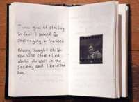

|
"Selections
from Mein Kampf" |
"That
Two-Edged Bliss" |
I dont just make books; I also make sculpture and installation art. But the books are really my big love, because theyre intimate and personal and interactive in a way the other work isnt as much. I really like to write even though I dont consider myself a writer; I like puns, the multiple meanings and associations of words, how words sound. Im doing word assemblage. I make assemblage sculpture and thats what I do with words. I put unlikely words together and thats how I create other stories.
Ive been making books since 1991. My primary source for art supplies is the flea market; Im intrigued by other peoples detritus. At some point I started using other peoples cast off words. I would take parts of books and cut them up and juxtapose them with parts of other books, such as a sex manual with a hunting guide. Writing in this way, I came up with lots of surprises that I wouldnt necessarily have come up with on my own.
The themes of my work have to do with sexuality, history, Jewish identity, challenging the status quo, class, economics. I try to take these serious issues with as much levity as I can. I hate work thats didactic, but I also always want to take jabs at the system, the inhuman forms of existence that we all are forced to live under.
There are a number of ways I work. One is to delete parts of a text and leave words in that form a completely different text, one that usually subverts the original. Thats the case with That Two-Edged Bliss, which came from a book called, When Knighthood Was in Flower. I delete text in many different ways: covering it with strips of money, cutting it with an exacto-knife, sewing it out, taping it out; I use all sorts of methods to hide or partially hide original text and let other words come out.
That Two-Edged Bliss is one of a number of pieces that Ive done about being bisexual and how a lot of people have a difficult time with that because its not one or the other; its both/and not either/or. I got this weird old book and started picking it apart, taking out large amounts of text and leaving certain words. I found images from various sources old encyclopedias, womens magazines from the 1950s, sewing books, religious and historical photographs and paired them with the pages in an intuitive way. I just gravitate to certain images. I pair them if my gut tells me to; I try to go with that without thinking too much about it.
Another way I work is to cut out phrases from one book, or sometimes more than one. In the case of Selections from Mein Kampf, I had a copy from the flea market. I didnt know what I was going to do with it but I knew I had to have it, because how often do you come across a copy of Mein Kampf from the 1940s? It sat around in my studio for several years emitting toxic rays. One day I just had it cut up into several pieces. I ended up making four books out of it. In one, I burnt out text; in another, I covered text with strips of Hebrew writing; in a third, I used a tape transfer method to obliterate parts of the text. On the one shown here, I tore out phrases from the original and reassembled them to make poems in which Hitler expresses remorse and contradictory feelings about what he has done. I sewed them together onto pieces of a Hebrew prayer book that Id found in a second hand store in a state of complete disrepair I felt guilty about using it but it was already falling apart.
Sewing plays a very important role in my work. My background is in textiles. My parents were upholsterers; I grew up around fabric and thread and needles and learned how to sew at an early age. In my sculpture I use sewing as a way of drawing, of creating line. In books, its a way of integrating text from different sources. I find zig-zag a great way of making the transition between different kinds of paper; it makes the page more of an integrated whole rather than one paper stuck on another. Plus, I really like sewing things that are not normally sewn; I sew everything from paper to wood to metal. I like its associations with domestic, traditionally womens work and craft and using that in my art.
Livres de Poètes: Emily McVarish
Ive been really interested in the three-dimensional and mechanical aspects of reading and poetics. Conventional books pretty much have one way they work mechanically; they do have a third dimension, but the two-dimensional page is more central. Most of the work Ive done has been sculptural, oftentimes with more than one mechanical feature. Some of these pieces emphasize one feature of a book, say the turning of a page as a repetitive motion, while limiting other graphic possibilities. Theres an exaggeration of the object status of the book. Using found objects in the sculptures has given me so much to go on conceptually and in terms of design incidents; there was an immediate dialogue with those objects that helped me to figure out how to structure a book. With found objects, their material history has been immediately apparent. The interplay between that and the text has been accessible to me and the viewer. Im now trying to work with conventional forms or formats, both graphical and structural, as being in some way found a shift from an actual old object to something slightly more abstract but trying to take on the convention in the same critical (in the sense of exploratory) way.
I think the sculptures were my way into books; I was hesitant to take on the conventional book format and was more interested in figuring out what about that format drew me, by playing out different aspects of that. Now that Im figuring out what those single factors were, Im getting up the courage to face the conventional book.
I have also made catalogs that accompanied and documented exhibitions of the sculptures. They contain all the texts that were incorporated in the sculptures, yet have their own being. The emphasis of the show, an ephemeral event, was on fragmentation and dissemination. Say I wrote a text and paired it with six linotype drawers. That text might then be divided into six parts; each drawer would become one chapter in the text. The exhibition was the event where you would see the whole thing, but I would sell the six pieces separately: the ultimate fate of those objects was to get pulled off in bits. The catalog was a concession of a not quite admitted desire on my part for the text to have some endurance; it grouped and kept it whole; in that way it was a lot more like a traditional book. At that point, the traditional book form couldnt satisfy the more radical interest to have things more temporary, more contingent on context, that the shows provided for me. Its only now that Im trying to figure out how a book might less have that pretense to being permanent and whole.
The texts are almost all the product of the process of cutting up existing texts and recomposing them. It starts with choosing a few books that interest me and trying to scan, not really read, the texts, like an airplane going over a landscape. I cut them out and have a whole system of arranging those bits. If I already know theres going to be a theme that Im writing about, I might arrange according to that theme; but usually the arrangements grammatical. This method of composition is a way of creating a dialogue between me and these bits of text rather than trying to find something within my head without that kind of prompt. Its definitely influenced by surrealist and automatic writing and other kinds of rule-based and chance composition, but Im not that systematic; its not about demonstrating something by pure experiment, its just a way for me to write. The bits that Ive cut out have gotten smaller and smaller; basically, theyre single words now, whereas when I started out, they would be whole sentences, citations of whole thoughts. There has been a real continuity between that process of writing and the next step of setting type and the found objects, which would determine everything from the structure of the piece to the size of the edition. I used to work with multiple determinations: for every step, every decision, I would make sure I had material determinations to work with. Now thats changing somewhat. I dont necessarily work with type and Im doing less found object work. But the texts themselves still come out of a material, concrete, exchange with words.
At the wheel is part of a series of texts, included in the exhibition and catalog Wards of Obsolescence, that I wrote under the influence of Walter Benjamins The Arcades Project. The Arcades Project is the hidden center of Benjamins entire oeuvre, a thousand pages of notes, fragments, quotations, citations, about the arcades of Paris as the perfect 19th century construct. The arcades were a favorite image for surrealist writers; they held a ghost or aquarium feeling, because they were already dead by the beginning of the twentieth century; Benjamin saw them as greenhouses for 19th century dream images. This year, The Arcades Project has finally been translated into English; I had for years had the French translation. Its been for me an infinitely inspiring source, including the whole series of texts that At the wheel came from. I tried to take Benjamin literally: he was saying we could make a critical history out of the stuff itself. I thought I would take old stuff and make the books out of that, using objects the way he regards them, as being revelatory about the implications of the history that they carry. I took certain images as evocations of modernity. At the wheel is the image of the ferris wheel waiting in line, getting on the wheel, entertainment used to discuss the Benjaminian idea of popular culture presenting pseudo-satisfactions of what are essentially utopian dreams. Its about waiting for technology to give us what can only come from social change.
The presence of the human figure in the Wards of Obsolescence series was on the level of society; I had been thinking about the writing of history. Then I thought, what happens where existential and historical time meet? A quote by Siegfried Kracauer, The flight of images is the flight from the revolution and death, was the beginning of Lives and Property for me. Kracauer was saying that the onslaught of the visual in modern society not only keeps us from seeing real economic conditions but also has an individual existential influence of keeping us from contemplating our own death. Where do the social and societal and political intersect with individual existence and the things including death that determine and define individual existence? Lives and Property is an exploration of that intersection. Death is in the middle of that text; the whole piece is like a tombstone; everything about it is dark and dense, gray and closed onto itself. The title refers to the way those things are counted and named on an historical level: the damage of major conflicts, for example, is counted in terms of lives and property. The piece looks at the relationship between existence viewed from that historical point-of-view and existence viewed from the first person point-of-view back up at history.
Livres de Poètes: Denise Newman
|
 |
I began making books over a series of summers spent writing on the Danish island of Bornholm. Most of my books are tiny handwritten narratives illustrated with drawings, watercolors or photographs in purchased blank pocket notebooks. Im not so interested in constructing the book itself; Id rather find a blank book ready-made and fill it. I made these books because, on Bornholm, Id have a lot of time and wanted to do something other than writing. So I decided to illustrate some of my work; it was a good way to bring together my drawing and painting and writing. I nearly always began with the poem or story first.
I just dont have that kind of time now, as I did on Bornholm. Since those summers, most of my books are made as gifts because its the only time Ill give myself to do it. The Brilliant Poet Series was made that way, four books written as an appreciation of the work of poet-friends that I gave each of them as presents. Others are more private, only to be read by the persons they were made for.
I see the small books as puppet theaters. The book is the stage, the pictures are the puppets and scenery, and the text is the story. Making these books is an efficient way to have my poems and stories performed albeit, without the impact of a whole room, though I like the intimacy of someone holding the theater in her hands and watching it in private, at her own pace.
I said puppet theater because it is miniature, which Im very drawn to 限 the mock version of the real stage. With theater, I have trouble suspending my disbelief. I can more easily enter opera, which is so false, or puppet theater, and become totally absorbed by it.
Theres a beautiful small cathedral in the city here thats a miniature of a grand cathedral; it has all the parts, but on a human scale; its elegant. I feel very much more comfortable there than in a huge cathedral.
As a child, I made things for myself, for my own pleasure, and these books are made with that freedom. They werent made for anyone else to see, except maybe close friends. The poems in the books are written in that way also: none of them have been published elsewhere; they have no other life outside these books.
In a few cases, I didnt begin with a completed text but wrote and illustrated the book as I went along. I dont feel theyre as good. There are parts that I like, but Id run out of ideas, Id run out of juice, and so its spotty. It works better when I have the text and then I look for images that will provide the appropriate atmosphere. With Kafkas Grave, I let the pictures tell the story. I started out with the images, and did write it as I was making it. But with Opera for Two you and who?, Pearls Are Passing, and It, I started with the text.
I found many of these images in art books, altering masterpieces to go with my stories. Copying masterpieces is a great way to experience them. Often the pictures are creating a tension with the words rather than illustrating them. For example, theres a watercolor in Pearls Are Passing of a man and a woman hanging by their legs over a cauldron, while the text is something tender about love.
Theres such joy in making these books, like playing. Its a surprise that people like them so much. They were made for purely personal consumption.
I used to write and make books as a child, so for me, making letterpress books was a rediscovery of book making. When I took my first letterpress class, I was completely enchanted by the typography, the ink, the type, the smell of the ink, the feel of the paper, and the sounds of the machines. I wanted to make a book that had a classical design, in terms of its proportions, with crisp typography and lots of space on the page, so that the words would come out at you. The structure of the book usually preceded the writing of it. The size of the page, for example, greatly influenced the writing; a long page is not the same as an 8-1/2" by 11" sheet of paper. Everything that goes into the making of a book affects it.
With Fugitive, my first letterpress book, I fit the writing into a very strict, square form of 4 inches by 4 inches, using 4 sections of 4 pages, each page with 4 stanzas of 4 couplets. I like to work in form, though usually I find the form as I write. Once that happens, then I know I'm moving in the right direction; the form helps to bring the whole together. With Fugitive, the pattern was so strict that I wanted to break with it, set it free. First there's one page that has five stanzas instead of four. Then on another page I shifted from letterpress altogether and hand-wrote the page in each book. I'm not quite sure how that came about. Perhaps it's because of one of the lines on that page; it reads: "In America/space haunts, not architecture." The book, with its form, is very architectural and the line is about a transition toward a dissimilar place, a "rupture from Europe." And that may have inspired me.
About the same time, a friend and I began making one-of-a-kind books for each other. Making these books was exciting for their immediacy. I could use all kinds of materials that I couldn't use in letterpress, and the methods were definitely a lot quicker. This exchange between the two of us became a kind of dialogue, different from ordinary speech, like an exchange of poems. We were making the books as gifts, as a way of creating something just for the other person. A private gesture, as well as playful. Meanwhile, I went on to print and design two more letterpress books, Artist As A Young Woman and In The Bed Of The Press.
My most recent one-of-a-kind books are handwritten with an antique Ladies' Shaeffer fountain pen and illustrated with found photographs. The first in the series, A Botanist's Dream, is about my grandfather, who worked as a botanist at the Smithsonian into his 90's. After my grandfather died, I was helping my mother sort through his things and came upon photographs that were left unidentified. My mother was prepared to throw them away, so I asked her to let me have them instead. One day I must have been thinking again about making books. I took some paper and folded it and bound it in a binding that I liked. I brought out the photographs. They were so rich and interesting that it was quite easy to make connections and write the book a connection between a photograph and thinking of my grandfather, a photograph and the feel of the ink pen scratching the surface of paper. I really enjoyed the process of working with photographs; they helped me find a direction for what I had to say.
I still have a book in this series that is partially completed. I've imagined it, but I haven't written it; it's just kind of waiting. It's inspired by a phrase in Keith Waldrop's poem, "Poet": "I build houses that I will not inhabit." I found that very haunting. Not inhabiting. It seems appropriate with books because once you've made them, they're out there, separate from you. Somehow the handwritten books, because they're more personal, because they're one-of-a-kind, maybe because they are handwritten and not the printed page, still have a quality of intimacy.
Livres de Poètes: Jaime Robles
I started working with books when I was fairly young; in college I majored in both English and art. Although I liked doing artwork, I didnt like the unique aspect; I was too attached to what I was doing. One of my original attractions to printing was that not only could I combine art and words but I could make multiples. I saw a show of work by students who were printing pieces with both image and text; I asked one of them to show me how to use the letterpress and made my first piece, a translation of a St. Theresa of Avila poem with an etching.
After college Kathy Walkup, Cheryl Miller and I started Five Trees Press. We published several letterpress books, including poetry by H.D. and Denise Levertov. Ive worked in one capacity or another in graphics and book design and editorial for thirty years now. At one point, I worked for the artist Sam Francis, running his letterpress shop, The Lapis Press, where I edited book projects with writers Michael Palmer, Kathleen Fraser, and Bruce Boone, among others. Working with them helped me decide to take my own writing more seriously. I entered the writing program at San Francisco State, and Ive been plugging along since.
I dont know how I decide to do a particular book; I just take a fancy to whatever it happens to be. Before I make the actual book, I have the writing, or an idea of writing. But I like to have books evolve rather than be planned out, as they have to be in my trade book work.
Chance Meeting on a Train, for example, is an evolved book. I positioned printing plates in different ways and made monoprints, so that I had a group of page spreads. For the text, I randomly circled phrases on a newspaper page without looking, then shuffled the phrases together. I folded the monoprinted pages, put them in an order and printed the random/found text on them. I made an edition of three, but theyre each unique in that theyre different monoprints.
Ive done a series of journal books that originated in on-going journal events and existed as mail art pieces before they became books. One of these is Ednas Death, which I made when I was living with my grandmother while she was dying. I felt so alienated from everybody; I couldnt really communicate that, it was tediously boring. So I decided to make a mail art piece in which, once a week, I would send something about this experience. Some of the pieces are poems about exchanges between my grandmother and me. Ones a note that I found about a story she tells of a friend of hers thats in the hospital. Ones a photograph of a parking meter outside the mortuary theyve put a bag over the head of the meter that says Funeral. It seemed so appropriate that there was this obliterated time.
Some things look better in letterpress and some things look better in photocopy. With Ednas Death, I liked using photocopies and a typewriter face because it had that more casual, this-is-happening-everyday look; it didnt look worked.
I find myself drawn to making works that are both visual and verbal because I think both are necessary to give fullness to whatever it is that Im trying to express. Theyre really two expressions of the world, and they dont overlap. But when both are present, something about the interaction transmutes the two into a third thing. So, say we have this bottle on the table. And say I write something about it. That verbal expression of the bottle captures a certain kind of essence about the bottle; its an intellectualized thing. But if I draw the bottle, its an expression that is radically different from the verbal. Theyre not illustrations of each other theyre absolutely not illustrations of each other. I have to say I think the visual is more intuitive, but its not simply about feeling. I would say that feeling is a third expression, permeating the presence of both the verbal and visual. Im not rating these in a hierarchy. Im not saying that the combination is better or more effective than verbal or visual solely. Thats not the case. Its that you have three little worlds on a plate, three different forms of expression. I think thats right. I think thats at the moment how it looks.
Livres de Poètes: Meredith Stricker
Thinking about my own history of writing, it has become clear to me that its not that there was poetry and then there were books; the materials and the objects were the poetry. When Im writing its not necessarily to communicate, its to make something. Certain things can only exist in the form youre making; you can see things, you can understand things that cant exist in any other way. The issue of making the things comes first; you cant think about your audience. With artists books, if Im making something with sticks and mud, I dont worry about how will it be sent in the mail or how someone will carry it. I dont think about how people are going to wrap up their merchandise; its not a primary concern. For me, I was just busy wrapping books with gauze and sticking plasterI was literally bandaging books because they looked so beautiful. I would do this with books I didnt make, people like Mishima whom I found difficult or disturbing. I thought, this would work better, making an object beautiful or magical, so you could see it like a rattle or talisman but wouldnt have to literally traipse through each one.
For other book artists, the wonderful thing would be realizing material into the world. Cecilia Vicuna would leave little books made with sticks, writing, thread, all over New York theyd be distributed by peoples chancing upon them. One of the most exciting things that happens with a book is that people can read it or find it or exchange it. The idea of being able to make multiples and put the book into distribution artists can crack open the censorship of the market, the barriers to what gets published. An artists book can say, when normal presses arent going to take on this material: This can be read or seen by others.
Looking at the continuum of people working with artists books, my own process is way on the end of one of a kind; not just because they are one of a kind but because I dont get around to thinking, How do I make a thousand? How do I send this out in the world? I am thinking of making a poetics. Theres a difference between making artists books that are within ones own realm of writing or practice, and having a press: with the press, youre gathering people together, bring other artists and writers work into form. That becomes its own community, which can then open into a wider community. Its the difference between an individual act and a collective act. I dont know that I believe those are totally separate, but there is a difference there thats striking.
Distribution is where the web becomes an interesting practice, because its all about the ability to distribute on an incredibly wide scale. I dont know how it would actually work; Ive never really wanted to view work on the web. I know there must be wonderful work there, but I havent been drawn to it. I dont want to encounter a screen; its always going to be the same material. Its an issue of translation. What gets transferred if youre scanning work with rocks and twigs? Is it a translation that carries enough of an original?
Theres a quote from Susan Sontag in which she says a photograph is not only an image but also, a trace, something directly stenciled off the real, like a footprint, or a death mask. The light has touched what has been seen. A scan is it the same thing? If Im looking at an object on the web, its a trace of a trace, its not the imprint of something thats directly stenciled off the real. If you take a photograph, you are limited by what the material is and by what is being transfigured or seen. But if youre working in Photoshop and moving the pixils around, youve left the sensory world.
I do a lot of work on the computer; I hate it. My body does not feel happy. I was very conflicted with video. I very much needed to make a piece that could put together movement, image, color, text, but I hated the process, the queuing up, the editing, the equipment hours and hours of activity that I didnt love. To me, thats the worst direction in making art. Everything counts when youre making a piece, every gesture; when youre polishing, sanding: thats the work, thats part of the piece as well. Something about the electronic or digital process is distancing for me. Im making a split, a deal, between what I want to end up with and what Im going to do to get there. But Im sure that other people must find pleasure in the process.
I write with fountain pen, ink, paper; I have to see the writing first as a drawing. Its the spaces that happen, the way the ink moves, how it feels when Im making because Im not thinking the words, theyre being made or found on the paper. If Im making a drawing, Im making marks and thats how I discover what Im drawing. Every mark you make, every blot that happens is talking back to you. Everything tells you something about it. When thinking is not separated from your senses, its coming from your own necessities.
I think the words come first usually, but I cant guarantee that always works. There are a whole series of writings that Ive made from paintings. I found when I started working in oil paint that the paint was incredibly noisy, it was talking to me. I was reading H.D. at the time and the paint was telling me all about H.D.; those paintings became a part of my thinking about her, it was very informative. Sometimes I think the writing comes from something that would originally have no language at all sanding, constructing, painting, working with my friend who is a dancer, going for walks.
When I was 18 or 19 and very drawn to Woolfs writing, the idea of the press always struck me, before I ever thought of making books; the idea that if youre writing, you need to do something else besides sit. I couldnt stand the idea of only staying in your mind; it seemed vital to me and to my own survival to handle things. For me it was always the idea that Woolf was there wrapping these books: the labor that was required, the repetition, lost in language, seemed crucial. I came across a little Hogarth book in the library at Iowa on the shelf and I just about fainted it was so beautiful. Little maroon binding, black and white speckled.
When you make a letterpress book on your printing press, its like you are getting run through the press, printed and being changed with each run, your being is connected with each run and being printed. The way the type goes into the paper is happening to you. Then theres the attention paid to how do you open the book, what do you first encounter, how does it feel, what are the colors, how does that connect with the text or images? Some of that must transfer when someone handles it. It cant not. Its so imbued. Maybe thats part of the pressing over and over and over again. Why is it necessary? Is it like chant or repeated prayer?
I think thats one of the things that handmade books or any kind of beautifully made book does. Whether its a book thats meant to be read or a book thats meant to be experienced youre engaged, absorbed, you move from page to page. Theres something that happens when someone gives you a physical, material form that I dont know why, but I keep thinking that its been loved. Its so dense, so touched, so handled, so made. The attention of the making. What happens when we dont care about what we handle or touch anymore? What happens when we have things that are indifferent and just get the job done?